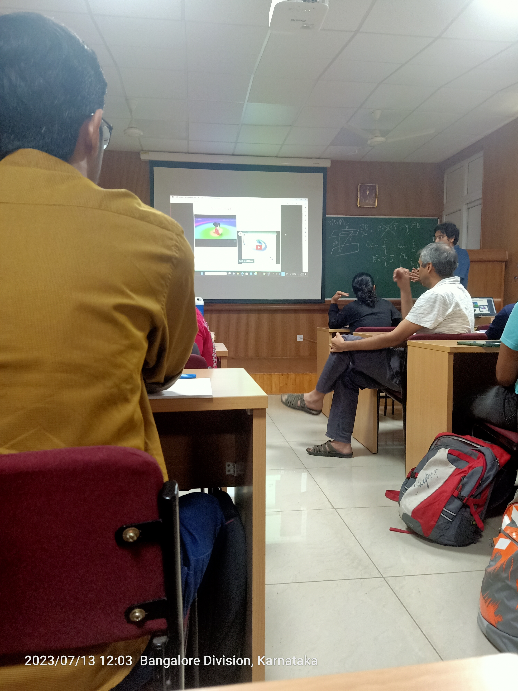

13
Countries
—
Cities
3
Continents
9+
Science Institutions
Countries Visited
🇮🇳 India
🇫🇷 France
🇩🇪 Germany
🇨🇭 Switzerland
🇧🇪 Belgium
🇳🇱 Netherlands
🇸🇪 Sweden
🇩🇰 Denmark
🇦🇹 Austria
🇻🇳 Vietnam
🇪🇸 Spain
🇧🇬 Bulgaria
🇨🇿 Czechia
Tourism Map
✦ My Cities
Scientific Visits — A Field Journal
2021
[ Add photo: assets/images/visit/miranda.jpeg ]
Miranda House, University of Delhi
[ Write a short note about this visit — what you worked on, what you remember, what you took away. ]
2022
[ Add photo: assets/images/visit/iiser-a.jpg ]
IISER Pune
[ Write a short note about this visit. ]
2023

Indian Institute of Astrophysics (IIA)
[ Write about your time at IIA — working with Dr. Piyali Chatterjee on solar spicule simulations, what the campus was like, what this internship meant for your research trajectory. ]

Indian Institute of Science (IISc)
[ Write about the PLUTO code workshop — what you learned, who you met, how it shaped your understanding of MHD simulations. ]

Inter-University Centre for Astronomy and Astrophysics (IUCAA)
[ Write about working on compact stars in the Buchdahl limit with Dr. Debarati Chatterjee and Dr. Naresh Dadhich. What was the IUCAA environment like? ]

Indian Institute of Technology Kanpur (IITK)
[ Write about the Aditya-L1 and solar physics workshop at IITK. ]
2024

Indian Institute of Science (IISc) — ASI Conference
[ Write about presenting your poster at the ASI conference — first time presenting at a national conference, what the experience was like, who you met. ]

International Centre for Theoretical Sciences (ICTS-TIFR)
[ Write about the ICTS conference — what the programme covered, your poster presentation, the ICTS campus, and what you got out of it scientifically. ]

Sorbonne Université & Université Paris Cité
[ Write about arriving in Paris for the M1, the transition from India to France, studying at Jussieu, and what the first year of the master's was like. ]
2025
[ Add photo from IST Austria visit ]
Institute of Science and Technology Austria (ISTA)
[ Write about the XShootU meeting at ISTA — what was discussed, what ISTA's campus near Vienna was like, who you met. ]
[ Add photo from Bulgarian Academy of Sciences visit ]
Bulgarian Academy of Sciences (BAS)
[ Write about the conference in Sofia — your poster presentation, what Sofia was like, the scientific atmosphere. ]
[ Add photo from Aix-Marseille visit ]
Aix-Marseille Université
[ Write about the MaNiTou gravitational waves summer school — what topics were covered, who taught, what Marseille was like. ]
Now
[ Add photo from Observatoire de Paris, Meudon ]
Observatoire de Paris — Meudon
[ Write about your current internship at the Observatoire — the Meudon campus, working with Dr. Corentin Louis, what a day in the lab looks like, Juno data on your screen. ]
Scientific Visits Map